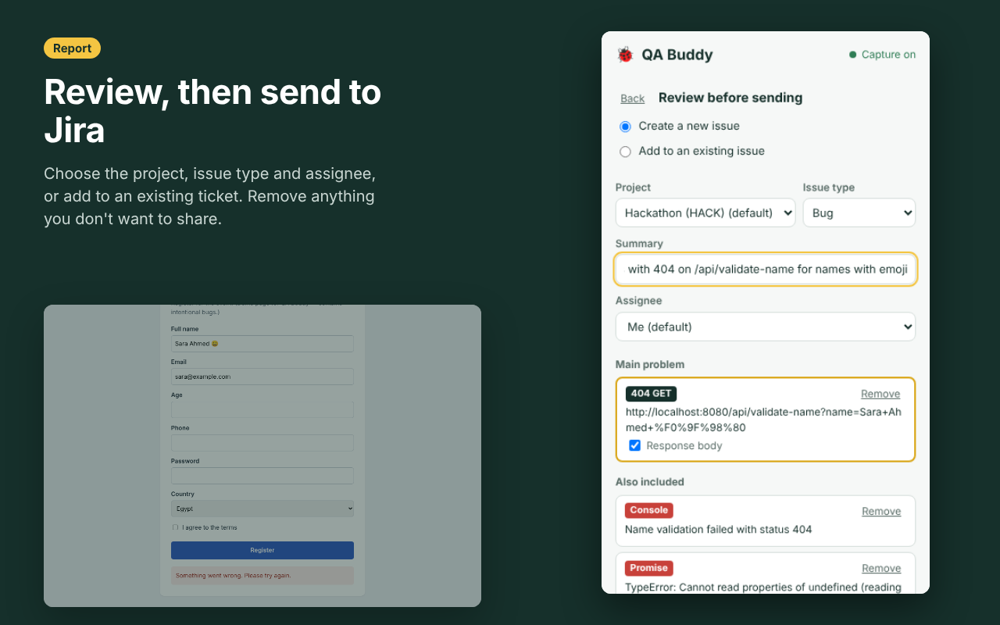
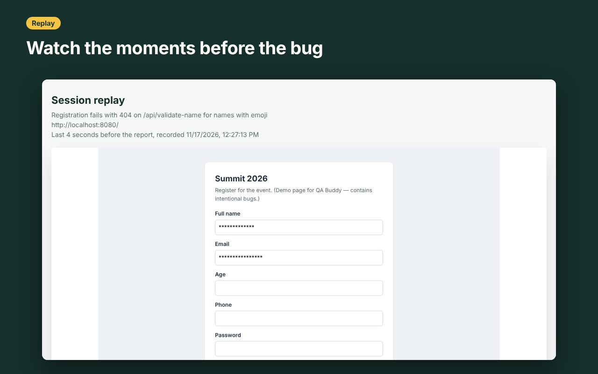
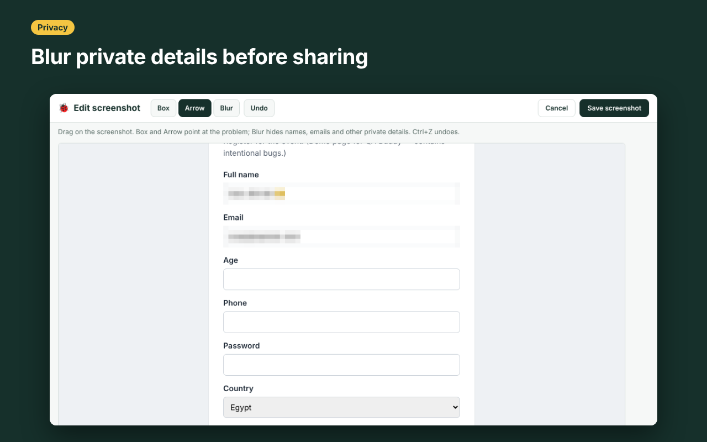

What it does
Captures what matters
Console errors with stack traces, failed, slow and cancelled requests, including inside iframes.
Writes the steps for you
Pages, clicks, selections and the fields you typed in. Never what you typed.
Replays the moment
A short session replay of what happened before the bug, with typed values masked.
Focuses on the bug
Only what happened after your last action, repeated calls grouped, noise from other sites hidden.
Sends to Jira
New issue or an existing ticket, with project, type and assignee. You review everything first.
Private by design
Data stays in your browser until you send it to your own Jira. No analytics, no servers.
See it



Get started
- Install QA Buddy and pin the 🐞 icon.
- Create a Jira API token at id.atlassian.com → Security.
- Open QA Buddy → Settings: your Jira site, email and token → Test connection → Save.
- When something breaks, click 🐞, review, and create the issue.